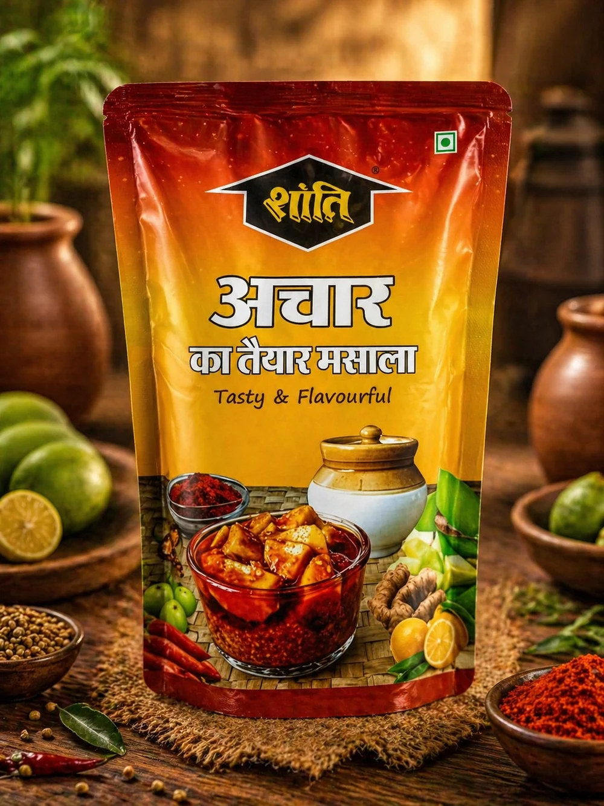
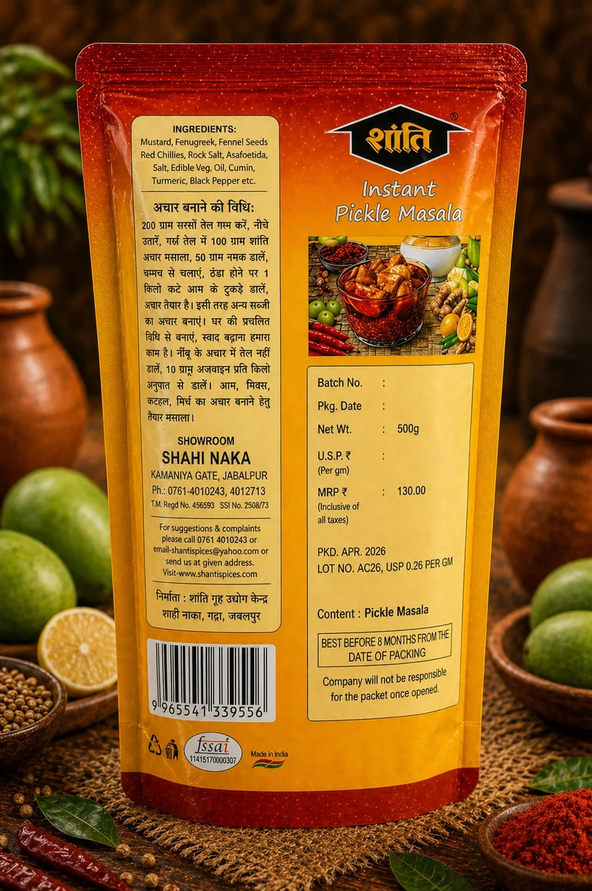

Warm the oil
As directed on the pack, warm 200g mustard oil and take it off the heat.
A little tradition in every spoonful
Bring the flavour of homemade pickles to your kitchen with Shanti's ready-to-use Achaar Masala.

Meet your achaar companion
Shanti Achaar Masala brings together a mix of spices used in classic Indian pickle-making. Choose the pack size that suits your kitchen.
A ready-to-use spice blend for preparing flavourful homemade pickles.
The same product photograph is used to represent all three selectable pack sizes. Pack size and MRP change with your selection.
The ingredients behind the flavour
The product label lists a combination of spices and seasonings that come together in Shanti Achaar Masala.
Ingredients shown are based on the product packaging. Please refer to the pack for the complete ingredient declaration.

From masala to homemade achaar
The product pack includes a mango pickle preparation method. Follow the complete instructions printed on your pack.
As directed on the pack, warm 200g mustard oil and take it off the heat.
Mix in 100g Shanti Achaar Masala and 50g salt. Stir and allow the mixture to cool.
Add 1kg cut mango pieces and mix. Refer to the packet for the full method and any additional guidance.
Preparation quantities above are transcribed from the product pack. Follow the current pack directions and safe food-handling practices.
The Shanti story
Shanti Spices began in 1972 in Jabalpur, Madhya Pradesh. Founded by the previous generation and now managed by the next, the business continues its journey with a connection to the flavours and food traditions of Indian homes.
Today, Shanti brings its Achaar Masala to kitchens looking to prepare their own pickles.
Get in touch with Shanti →For retailers & business buyers
Are you a retailer, grocery store, distributor or wholesale buyer? Connect with Shanti Spices for business enquiries about Achaar Masala.
Wholesale enquiry on WhatsApp ↗We would love to hear from you
For product, retail or wholesale enquiries, get in touch with Shanti Spices.
Chat with us on WhatsApp ↗